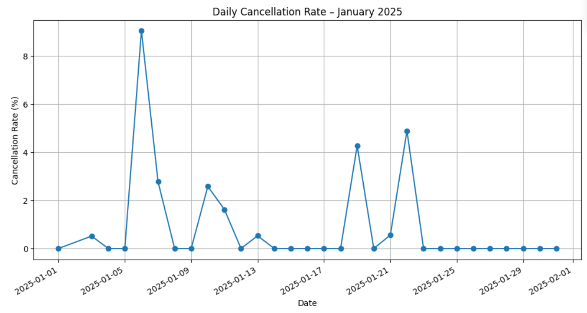
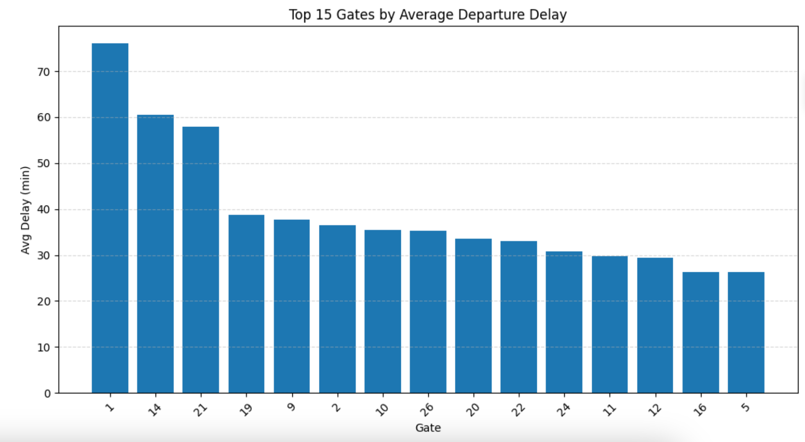
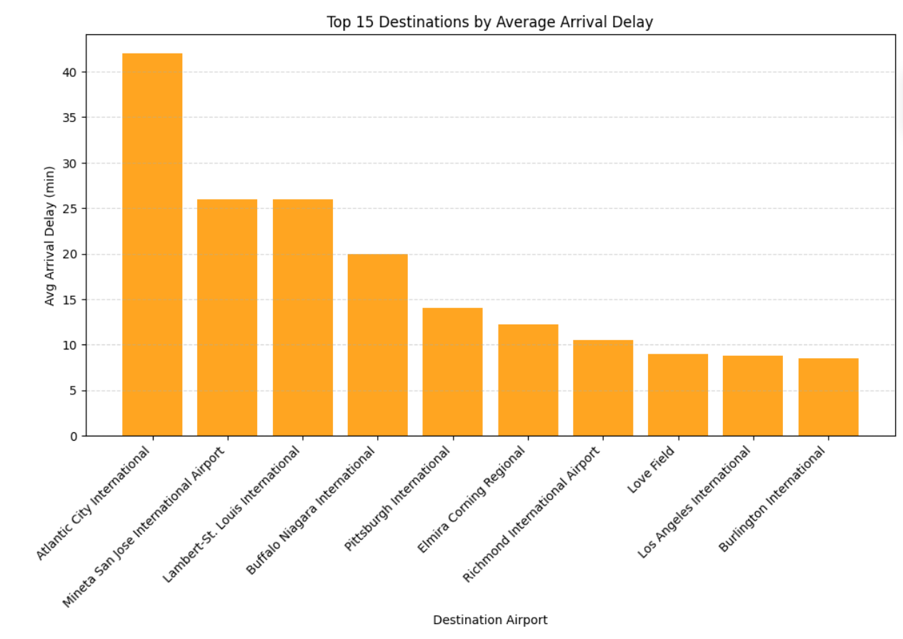
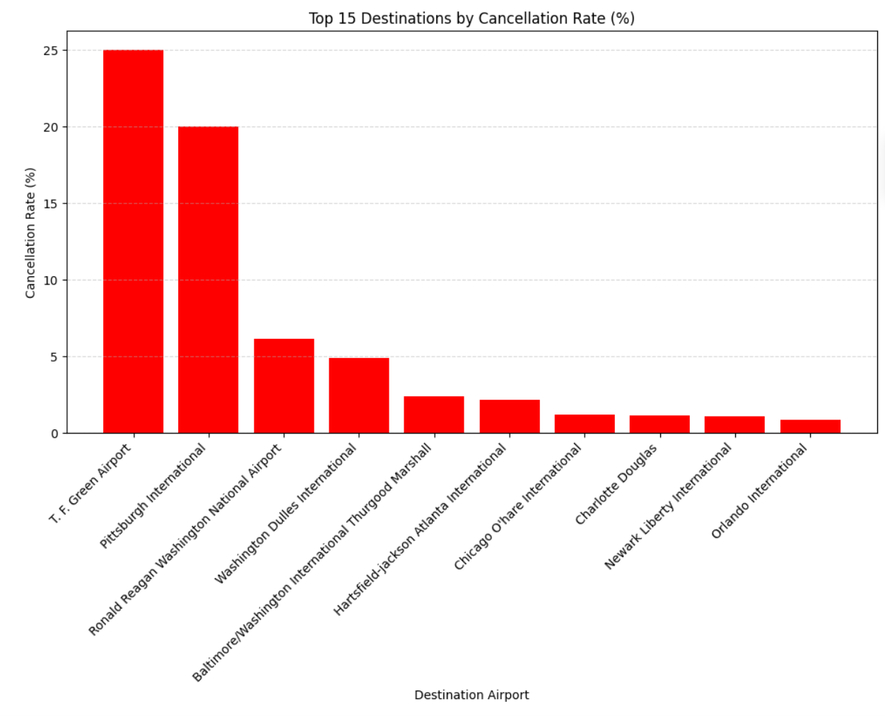

Data Analysis
The full Jupyter notebook renders directly on GitHub — every chart, table, and line of code, in the order it was run.
Airports and airlines juggle scheduling constraints, gate availability, weather, and flight volume — and when something slips, it isn't obvious where. Without structured analysis it's difficult to say which operational factors actually drive delays, or where they concentrate.
This project analyzed one month of flight activity at Buffalo Niagara International Airport to answer that: which airlines, destinations, gates, and days account for the delays, and whether the pattern points at anything fixable.
Thirty JSON files — one per day of January 2025 — each holding a day of flight activity at BUF. Getting them into a single analyzable table was most of the work.
Scheduled and actual departure times, scheduled and actual arrival times, airline carrier, destination airport, aircraft information, gate assignment, and delay and cancellation indicators.
The 30 daily files were loaded and combined into one dataset, then cleaned — missing values handled, inconsistent formatting standardized, and scheduled versus actual times parsed into comparable formats. Delay metrics were calculated from those pairs, and a cancellation flag derived, producing the departure delay and arrival delay variables the rest of the analysis runs on.
Delays at BUF are common but modest, and the interesting pattern isn't in the averages — it's in the gap between how flights leave and how they arrive.
The average departure ran 27 minutes behind schedule (median 20 minutes), with the slowest tenth of flights leaving more than an hour late. Yet the average arrival came in 11 minutes early — median 14 minutes early.
That gap is schedule padding. Carriers build slack into block times, so a late pushback doesn't necessarily mean a late landing. It also means departure delay overstates the passenger-facing problem: most of that lost time is recovered in the air.
By the DOT's 15-minute standard, 45% of flights were delayed — 2,479 of 5,509.

Only 53 flights cancelled across the month — under 1% of all activity. But they don't spread evenly: cancellations concentrate on a handful of dates rather than trickling through the month, which is the signature of weather events rather than chronic operational failure.

Grouping by departure gate surfaced a spread wide enough to matter — certain gates consistently pushed back later than others, which points at ground operations and turnaround rather than anything in the air.
Destinations showed the same concentration: a small number of arrival airports accounted for a disproportionate share of arrival delay, and a separate small set drove most cancellations.

Ranking destinations by cancellation rate rather than raw count separates routes that are genuinely unreliable from routes that simply run more often. That distinction is what makes the finding actionable for scheduling decisions.

A four-person project. My contributions spanned documentation, data preparation, model planning, and analysis.
Prepared the raw flight data for analysis using Python and Pandas — combining the 30 daily JSON files into a single dataset, cleaning inconsistencies, handling missing and incomplete records, formatting scheduled and actual departure and arrival times, and creating the delay variables the analysis depends on.
Helped identify the key performance indicators relevant to delays and cancellations, and determined which variables to group and compare on — airline carrier, destination airport, gate assignment, and date of operation.
Wrote Python code generating the delay-metric visualizations, built the grouped aggregations comparing airline and destination performance, and developed the graphs supporting the departure and arrival delay analysis.
Wrote the executive summary communicating purpose, methodology, and key findings — translating the technical results into terms a non-technical stakeholder could act on.
What this analysis can't tell you, stated plainly — because knowing the boundaries of a dataset is part of reading it correctly.